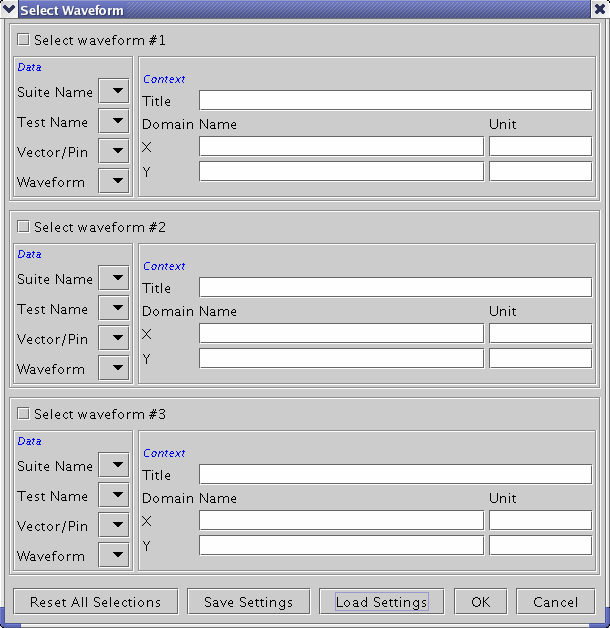
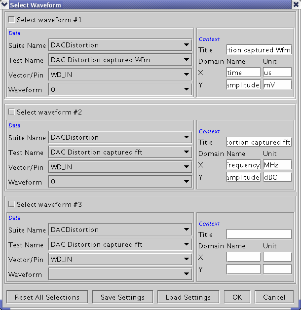
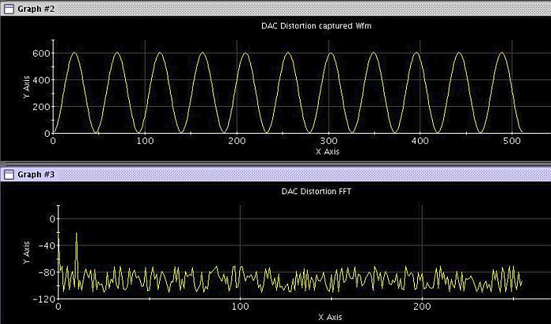

Select Waveform...
Once you have loaded a data log file, you can click Select Waveform to investigate the waveforms contained in that file.

The Select Waveform window has three sections for specifying up to three waveforms. This corresponds to the three waveform display areas the Signal Analyzer provides for uploaded data.
The Select Waveform window first checks the loaded file. If you see the message "No Waveform", the file does not contain any waveforms that can be displayed. Possible reasons are:
- The loaded file is not a data log file.
- You are not permitted to read the file. Ensure that you have read-permission.
To use one of the available waveform display areas, activate the corresponding checkbox Select Waveform #1, #2, or #3.
If the specified waveform display area is currently disabled, you can change the display in order to view the data.
Data Selection
A data log file can contain a couple of waveforms. To make the data selection easy, a kind of priority structure has been implemented.
- Suite Name: If you choose the name of a testsuite from the list, then all further selections will be restricted to that suite. Example: If you select a DAC Distortion suite, the Test Names will be restricted to "captured waveform" and "FFT" data, and only defined pins will be available.
- Test Name: If you choose the name of a test from the list, then all further selections will be restricted to that test. If using a test method program, select the label name specified by the label parameter of the PUT_DATALOG API. Example: If you select an ADC linearity test, only captured waveform, INL, and DNL waveforms and will be available.
- Pin Name: If you select a certain pin, only waveforms referring to that pin will be available. If using a test method program, select the pin name specified by the pin parameter of the PUT_DATALOG API.
- Waveform: If you have not made a preselection via Suite Name, Test Name, or Pin Name, you can choose between all waveforms contained in the data log file.
As the data log file can contain multiple waveforms of the same type (for example, DAC Distortion FFT, calculated for several pins), the waveforms are simply numbered in the order as they appear in the log file.

Context Information
Once you have chosen a waveform to be displayed, the context information contained in the data log file is automatically filled into the right-hand part of the Select Waveform window.
The Title is the graph name that will be shown in the graph window. Initially the combination of "Pin: <pin name>; TestSuite: <test suite name>; Label: <test name>" is shown in the text field. But you can modify it to make the name more descriptive. <pin name> and <test name> are taken from the value specified in the PUT_DATALOG() API.
The X/Y annotations (Name and Unit) are taken from the log file as shown below.
Labels that could not be determined are left blank.
As you may wish to document (print) the logged data combined with your own annotations, feel free to overwrite or complement the proposals.
Select Waveform Buttons
Reset all Selections: Returns you to the default (empty) window.
Save Settings: Enables you to save your display setting in a file for later recall. You have to specify at least a file name. You may also choose a different directory.
Load Settings: The counterpart to Save Settings - Enables you to load a setting that has been saved previously.
Done: Click this button to close the Select Waveform window and to display the chosen waveforms in the Signal Analyzer. If you Do not see much of a waveform, remember the Auto Scale button.
Result Display
After clicking Done, the logged data of a DAC distortion test may look as shown below.
